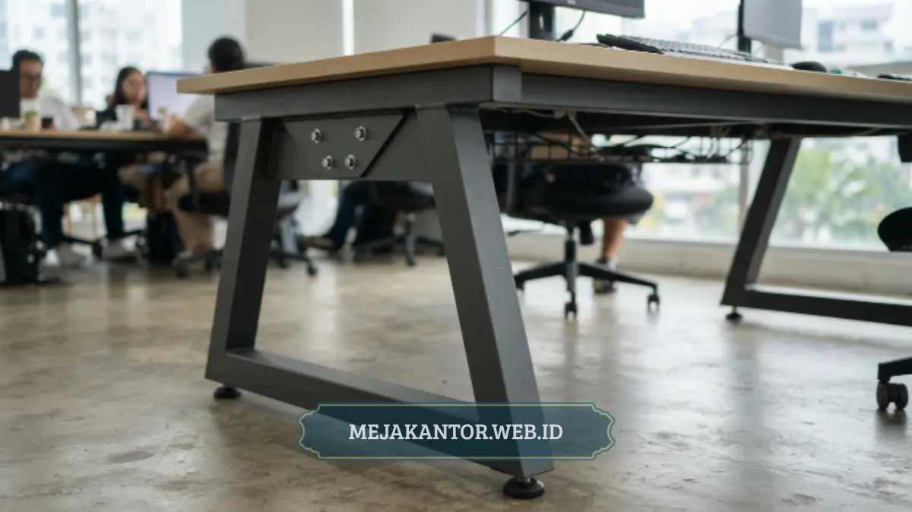

Meja Staff L-Shape MSO-140L adalah meja kerja berbentuk L dengan daun meja berukuran luas dan struktur rangka kokoh, dirancang untuk mendukung produktivitas kerja staff di workstation kantor modern.
- Bentuk L memberi area kerja lebih luas dibanding meja staff standar berbentuk lurus.
- Daun meja yang lapang memudahkan penempatan monitor ganda, dokumen, dan perangkat kerja lain.
- Rangka meja dirancang untuk menopang beban kerja harian tanpa mudah bergoyang.
- Desain L-Shape efisien untuk penempatan di sudut ruangan, menghemat ruang workstation.
- Finishing permukaan meja umumnya tahan gores dan mudah dibersihkan.
Meja staff L-Shape menjadi salah satu pilihan populer untuk workstation kantor karena mampu memaksimalkan area kerja tanpa membutuhkan ruang lantai yang berlebihan.
MEJA STAFF MSO-140L hadir sebagai salah satu varian dengan fokus pada dua aspek utama: luas daun meja dan kekokohan rangka.
Dua faktor tersebut sering menjadi pertimbangan utama saat perusahaan memilih furnitur untuk ruang kerja staff dalam jumlah banyak.
Daftar Isi Artikel
Apa Kelebihan Utama Meja Staff L-Shape MSO-140L?
Kelebihan utama Meja Staff MSO-140L terletak pada kombinasi daun meja berukuran luas dan rangka penopang yang kokoh, sehingga mampu menampung kebutuhan kerja staff dengan banyak perangkat tanpa terasa sempit.
Bentuk L pada meja ini memungkinkan satu sisi digunakan sebagai area kerja utama dengan monitor dan keyboard, sementara sisi lain dapat difungsikan sebagai area dokumen, printer kecil, atau ruang untuk pertemuan singkat dengan rekan kerja.
Konfigurasi ini membuat satu unit meja staff dapat menggantikan kebutuhan dua fungsi ruang sekaligus, yaitu area kerja fokus dan area kerja kolaboratif skala kecil.
Selain aspek fungsi, desain L-Shape juga membantu efisiensi tata ruang kantor. Saat ditempatkan menghadap sudut ruangan, meja ini memanfaatkan area yang biasanya kurang optimal digunakan pada layout workstation konvensional.
Bagaimana Kualitas Daun Meja MSO-140L?
Daun meja MSO-140L dirancang dengan permukaan luas yang mampu menampung perangkat kerja standar kantor, seperti monitor, laptop, dan dokumen kerja, tanpa membuat area kerja terasa sesak.
Permukaan meja pada umumnya menggunakan material berlapis laminasi yang tahan terhadap goresan ringan dan cukup mudah dibersihkan dari debu maupun noda cairan.
Ketebalan daun meja turut memengaruhi daya tahan terhadap beban statis seperti tumpukan dokumen atau perangkat elektronik yang diletakkan dalam waktu lama, sehingga permukaan tidak mudah melengkung meski digunakan setiap hari.
Ukuran daun meja yang lebih luas dibanding meja staff standar juga memberi ruang gerak tambahan bagi karyawan yang bekerja dengan banyak dokumen fisik, seperti staf administrasi, keuangan, atau desain yang membutuhkan area kerja lebih lapang dari sekadar satu unit laptop.
Seberapa Kokoh Rangka Meja Staff MSO-140L?
Rangka meja MSO-140L dirancang untuk menopang beban kerja harian secara stabil, dengan struktur kaki yang menahan daun meja agar tidak mudah bergoyang saat digunakan dalam intensitas tinggi.
Kekokohan rangka menjadi faktor penting terutama untuk workstation yang digunakan lebih dari delapan jam per hari, di mana tekanan berulang dari aktivitas mengetik, menulis, atau meletakkan barang dapat memengaruhi kestabilan meja dalam jangka panjang jika rangka tidak dirancang dengan baik.
Struktur kaki logam pada meja bertipe L-Shape umumnya diperkuat dengan penyangga tambahan di titik sudut, mengingat area sambungan L membutuhkan dukungan struktural lebih dibanding meja lurus biasa.
Ketahanan rangka ini turut memengaruhi umur pakai furnitur secara keseluruhan, sehingga menjadi salah satu pertimbangan penting bagi perusahaan yang ingin meminimalkan biaya penggantian furnitur dalam beberapa tahun ke depan.

Cocok untuk Ruang Kerja Seperti Apa Meja Staff L-Shape Ini?
Meja Staff MSO-140L cocok digunakan pada workstation kantor dengan kebutuhan area kerja luas, terutama untuk posisi yang menangani banyak dokumen, perangkat ganda, atau tugas administratif dengan volume kerja tinggi.
Selain untuk staf administrasi dan keuangan, meja ini juga relevan digunakan oleh tim desain atau kreatif yang membutuhkan ruang tambahan untuk menata referensi visual, tablet gambar, atau perangkat pendukung lain di luar laptop utama.
Bentuk L yang menempel di sudut ruangan juga membuat meja ini cocok diaplikasikan pada kantor dengan keterbatasan luas lantai, karena tidak membutuhkan area tambahan seperti meja staff lurus dengan ukuran memanjang.
Bagi kantor yang menerapkan konsep workstation semi-tertutup, meja L-Shape ini juga dapat dipadukan dengan partisi kantor untuk menciptakan area kerja yang lebih privat tanpa mengurangi kelapangan permukaan meja.
Apa yang Perlu Diperhatikan Sebelum Memilih Meja Staff L-Shape?
Sebelum memilih meja staff berbentuk L, penting memperhatikan luas ruangan yang tersedia, arah bukaan pintu atau lalu lintas karyawan, serta kesesuaian ukuran meja dengan jumlah perangkat kerja yang akan digunakan.
Karena bentuk L membutuhkan ruang di dua sisi, perusahaan perlu memastikan area penempatan tidak mengganggu jalur sirkulasi karyawan lain, terutama pada workstation dengan kepadatan tinggi.
Selain itu, tinggi meja dan ergonomi kursi kerja tetap perlu disesuaikan agar postur kerja karyawan tetap nyaman meski menggunakan meja berukuran lebih luas dari standar umum.
Meja Staff L-Shape MSO-140L menawarkan solusi bagi kantor yang membutuhkan area kerja lebih luas tanpa mengorbankan efisiensi ruang, berkat kombinasi daun meja lapang dan rangka yang dirancang kokoh untuk pemakaian harian.
Meja ini paling sesuai digunakan pada workstation dengan kebutuhan dokumen atau perangkat kerja ganda, serta ruang kantor dengan keterbatasan luas lantai yang memanfaatkan sudut ruangan secara maksimal.
Untuk pertimbangan lebih lanjut dalam menata workstation kantor secara menyeluruh, dapat dilihat pada daftar harga partisi workstation kantor terbaru maupun ide desain meja rapat minimalis untuk ruang meeting.

Mega Anggun (Ega)
Penulis Konten & Spesialis Penataan Interior Kantor. Berpengalaman dalam memberikan tips ergonomi dan memilih furnitur terbaik untuk menunjang produktivitas kerja.